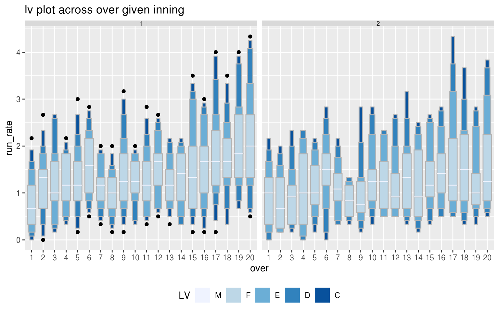
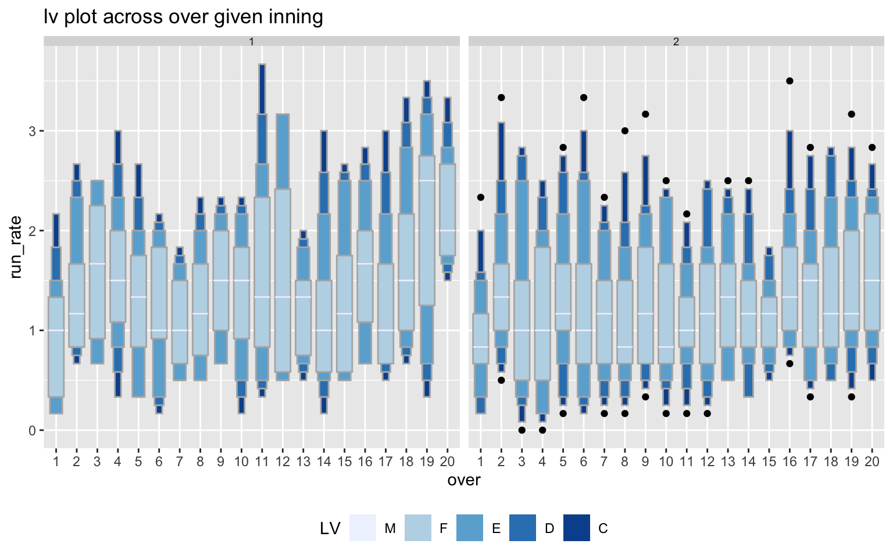
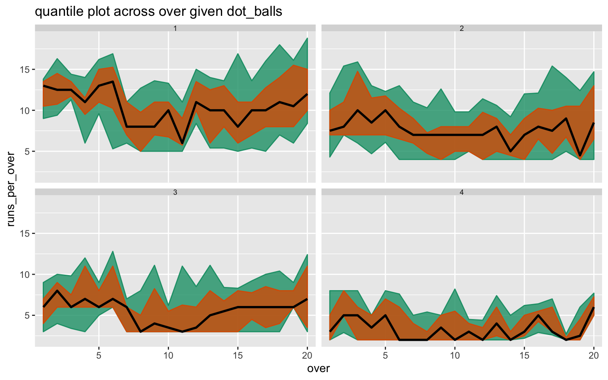

vignettes/cricket.Rmd
cricket.RmdTh application is not only restricted to temporal data. We provide an example of cricket to illustrate how this can be generalised in other applications. The Indian Premier League (IPL) is a professional Twenty20 cricket league in India contested by eight teams representing eight different cities in India. In a Twenty20 game the two teams have a single innings each, which is restricted to a maximum of 20 overs. Hence, in this format of cricket, a match will consist of 2 innings, an innings will consist of 20 overs, an over will consist of 6 balls. We have sourced the the ball by ball data for IPL season 2008 to 2016 from Kaggle. The dataset contains the information on batting team, bowling team, balls of the over, over of the innings, innings of the match and total runs per ball for 577 matches spanning over 9 seasons (2008 to 2016). It also has information on which team won, dismissal type, batting and bowling teams as other useful information.
A hierarchy like table can be construed for this game format, where index here would refer to ball as the data set contains ball-by-ball data.
| units | convert_fct |
|---|---|
| index | 1 |
| ball | 6 |
| over | 20 |
| inning | 2 |
| match | 1 |
There are many interesting questions that can possibly be answered with such a data set, however, we will explore a few and understand how the proposed approach in the paper can help answer some of the questions.
Mumbai Indians(MI) and Delhi Daredevils (DD) are two teams which played from 2010 to 2015, in which MI always qualified in top 4, and DD never made it to top 4. It would be interesting to see the difference in their strategies throughout all matches in these seasons. The following two questions might help us partially understand their strategies.
Q1: How their run rates vary depending on if they bat first or 2nd? Is there a chance that they are more likely to win if they bat first?
Q2: Which team is more consistent in their approach in terms of run rate across different overs of the innings?
We filter the seasons and batting team and compute the total runs per over and run rate per over from the ball by ball data set cricket.
cricket_per_over <- cricket %>%
filter(season %in% c(2010:2015),
batting_team %in% c("Mumbai Indians",
"Delhi Daredevils")) %>%
group_by(season,
match_id,
batting_team,
bowling_team,
inning, over) %>%
summarise(runs_per_over = sum(total_runs),
run_rate = sum(total_runs)/length(total_runs))Although there is no conventional time element in cricket, we can still represent the data set through a tsibble, where each ball, which represents an ordering from past to future, can form the index of the tsibble.
cricket_tsibble <- cricket_per_over %>%
ungroup() %>%
mutate(data_index = row_number()) %>%
as_tsibble(index = data_index)cricket_tsibble %>%
filter(batting_team == "Mumbai Indians") %>%
prob_plot("inning", "over",
hierarchy_model,
response = "run_rate",
plot_type = "lv")
#> Warning in gran_warn(.data, gran1, gran2, hierarchy_tbl = hierarchy_tbl, : Some combinations of granularities have less than 30 observations.
#> Check gran_obs() to find combinations which have low observations.
#> Analyze the distribution of these combinations with caution.
cricket_tsibble %>%
filter(batting_team == "Delhi Daredevils") %>%
prob_plot("inning", "over",
hierarchy_model,
response = "run_rate",
plot_type = "lv")
#> Warning in gran_warn(.data, gran1, gran2, hierarchy_tbl = hierarchy_tbl, : Some combinations of granularities have less than 30 observations.
#> Check gran_obs() to find combinations which have low observations.
#> Analyze the distribution of these combinations with caution.
cricket_dot_wckt <- cricket %>%
mutate(wicket = if_else(is.na(dismissal_kind),0,1),
dot_balls = if_else(total_runs==0,1, 0)
) %>%
group_by(season, match_id, batting_team, bowling_team, inning, over) %>%
summarise(wicket = sum(wicket),
dot_balls = sum(dot_balls))
cricket_tsibble_dot <- cricket_tsibble %>%
left_join(cricket_dot_wckt,
by = c("season",
"match_id",
"batting_team",
"bowling_team",
"inning",
"over"))
cricket_tsibble_dot %>%
filter(dot_balls %in% c(1,2,3,4)) %>%
prob_plot("dot_balls",
"over",
hierarchy_model,
response = "runs_per_over",
plot_type = "quantile",
quantile_prob = c(0.1, 0.25, 0.5, 0.75, 0.9))
#> Warning in gran_warn(.data, gran1, gran2, hierarchy_tbl = hierarchy_tbl, : Some combinations of granularities have less than 30 observations.
#> Check gran_obs() to find combinations which have low observations.
#> Analyze the distribution of these combinations with caution.